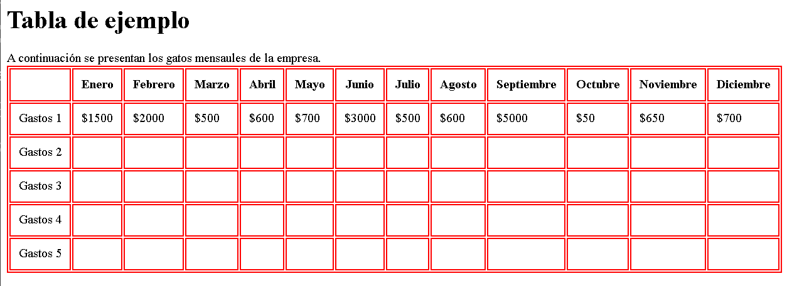
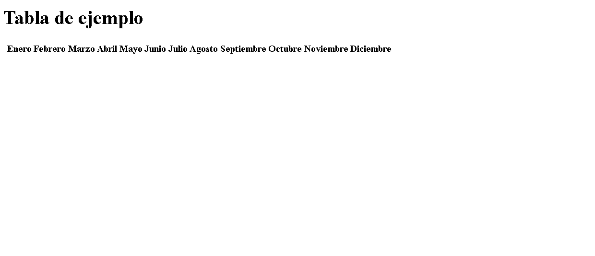
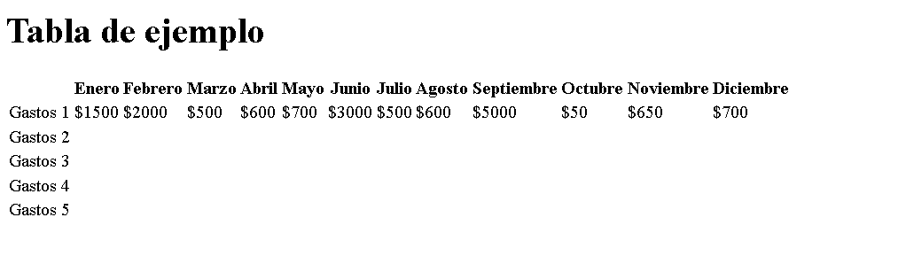

Las tablas son una herramienta muy eficaz para presentar datos organizados, así como para establecer el diseño de texto y gráficos en una página HTML. Una tabla se compone de una o varias filas, y a su vez está formada por una o más celdas.
Uso de las etiquetas:<table>, <thead>, <th>, <tbody>, <tr>, <td> y <tfoot>.
En este ejemplo utilizaremos la siguiente tabla como ejemplo:

Para comenzar a crear esta tabla, primero debemos incluir la etiqueta raíz, denominada table. Dentro de la etiqueta table, agregaremos tres etiquetas: thead, tbody y tfoot.
1 <table>
2 <thead>
3
4 </thead>
5 <tbody>
6
7 </tbody>
8 <tfoot>
9
10 </tfoot>
11 </table>
Comenzaremos trabajando con la etiqueta thead. Dentro de esta etiqueta, agregaremos 13 etiquetas th. La primera th quedará vacía, y en las siguientes escribiremos los nombres de los meses del año.
1 <table>
2 <thead>
3 <th> </th>
5 <th>Enero</th>
6 <th>Febrero</th>
7 <th>Marzo</th>
8 <th>Abril</th>
9 <th>Mayo</th>
10 <th>Junio</th>
11 <th>Julio</th>
12 <th>Agosto</th>
13 <th>Septiembre</th>
14 <th>Octubre</th>
15 <th>Noviembre</th>
16 <th>Diciembre</th>
17 </thead>
18 <tbody>
19
20 </tbody>
21 <tfoot>
22
23 </tfoot>
24 </table>Documento HTML Visualizado:

Como podemos observar, los elementos th se muestran con un estulo de letra en negrita. Continuemos con el resto de la tabla. Ahora trabajaremos en las filas del cuerpo de la tabla tbody. Las filas se crearán usando la etiqueta tr. En total, necesitamos 5 filas en el cuerpo de la tabla, es decir, 5 etiquetas tr.
17 </thead>
18 <tbody>
19 <tr>
20
21 </tr>
22 <tr>
23
24 </tr>
25 <tr>
26
27 </tr>
28 <tr>
29
30 </tr>
31 <tr>
32
33 </tr>
34 </tbody>
35 <tfoot>
36
37 </tfoot>
38 </table>Ahora, dentro de cada tr, agregaremos 13 etiquetas td.
</thead>
<tbody>
<tr>
<td></td>
<td></td>
<td></td>
<td></td>
<td></td>
<td></td>
<td></td>
<td></td>
<td></td>
<td></td>
<td></td>
<td></td>
<td></td>
</tr>En el primer td de la primera fila tr, escribiremos Gastos 1. En el siguiente, pondremos el siguiente gasto, y así sucesivamente. Puedes utilizar la imagen asignada al principio para recordar los gastos de cada celda.
</thead>
<tbody>
<tr>
<td>Gastos 1</td>
<td>$1500</td>
<td>$2000</td>
<td>$500</td>
<td>$600</td>
<td>$700</td>
<td>$3000</td>
<td>$500</td>
<td>$600</td>
<td>$5000</td>
<td>$50</td>
<td>$650</td>
<td>$700</td>
</tr>Ahora, en la primera celda de cada fila, es decir, en cada primer td de cada tr escribimos Gastos 2, Gastos 3, Gastos 4 y Gastos 5. Veamos neustro documento a ver si podemos visualizar algún cambio.

A continuación, tendremos una introducción a CSS, para poder hacer las líneas de nuestra tabla.